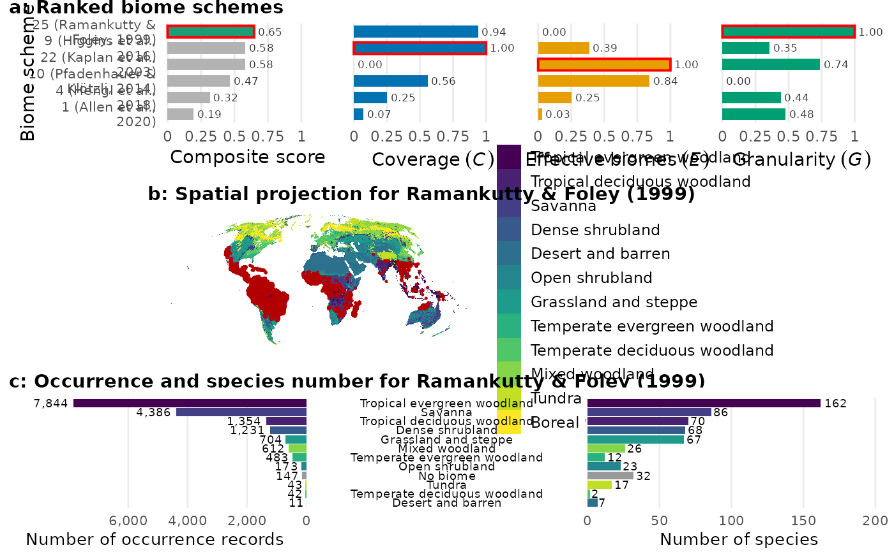
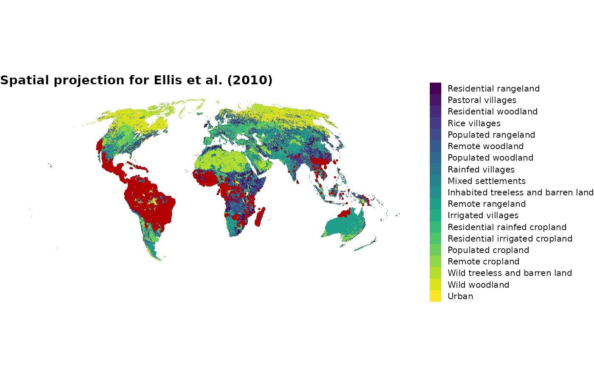
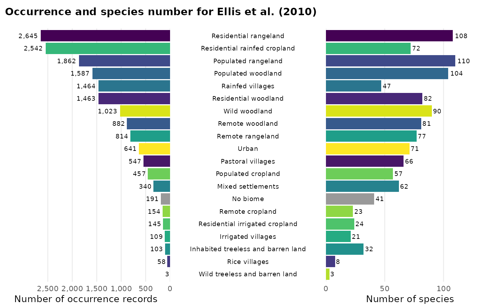

One-call workflow: from taxon (or dataset) to table (and optional figure)
Source:R/biomes_full.R
biomes_full.RdConvenience wrapper that runs the full biomes workflow in a single
call. There are two entry paths:
Usage
biomes_full(
x = NULL,
taxon = NULL,
scheme = "best",
lon = "decimalLongitude",
lat = "decimalLatitude",
value = "name",
plot = "none",
show = FALSE,
...
)Arguments
- x
Optional. A data frame with longitude/latitude columns, an
sfspatial object, or aterra::SpatVector. Mutually exclusive withtaxon.- taxon
Optional scientific name (species, genus, family, ...). Mutually exclusive with
x.- scheme
One of: an integer in
1:31(biome scheme number) to force a specific scheme;"best"(default) to pick the best-fitting scheme across all 31 viabiomes_rank(); or a biome definition ("climate","vegetation","land_cover","ecoregion","integrative","anthropogenic") to pick the best-fitting scheme within that biome definition.- lon, lat
Column names of longitude / latitude in
x(data frame only). Defaults"decimalLongitude"/"decimalLatitude".- value
Passed to
biomes_classify():"name"(default),"ID", or"both".- plot
Which figure(s)
biomes_visualise()should build."none"(default): no figure (the fastest option)."all": the combined, lettered figure (rank + map + barplot) in$plot. A subset ofc("rank", "map", "barplot"): the requested panels are returned individually (no panel letters) in$rank,$mapand$barplot– e.g.plot = c("rank", "map", "barplot")fills all three,plot = "map"fills only$map.NULLis accepted as an alias for"none".- show
Logical. If
TRUE, print the figure (if any) and the tabulation to the console as a side effect. The function always returns its result invisibly. Default:FALSE.- ...
Further arguments passed to
biomes_occ()whentaxonis given (e.g.limit,year_min,year_max,use_download, GBIF credentials).
Value
Invisibly, a biomes_full list with elements:
occThe occurrence data frame (downloaded or provided).
schemeThe chosen biome scheme number.
rankingThe ranking data frame (only when
scheme = "best"), otherwiseNULL.classifiedThe output of
biomes_classify().tableThe biome occurrence table from
biomes_tab().plotThe combined, lettered figure (only when
plot = "all"), otherwiseNULL.rank,map,barplotThe individual panels (no letters), each present only when requested via
plot = c(...), otherwiseNULL.
Details
From a taxon name. Pass a scientific name as
taxon(x = NULL).biomes_full()callsbiomes_occ()to download cleaned GBIF occurrences for the taxon and then proceeds as below.From an occurrence dataset. Pass a data frame,
sfobject orterra::SpatVectorasx(taxon = NULL).
Once occurrences are available the function:
picks the biome scheme (either
scheme = <integer>or, with the defaultscheme = "best", by runningbiomes_rank()and selecting the top-1 scheme);classifies the records with
biomes_classify();tabulates them with
biomes_tab();optionally builds a figure with
biomes_visualise()(controlled byplot; skipped by default for speed).
Examples
if (FALSE) { # \dontrun{
# Path 1: from a taxon name. Queries the GBIF web service and may
# prompt for the download workflow (GBIF credentials), so it is not
# run here.
res <- biomes_full(taxon = "Fagus sylvatica", limit = 2000)
res$table
} # }
# \donttest{
# Path 2: from an existing data frame, pick the best scheme.
# Uses the biome raster (~36 MB), downloaded on first use.
data("bombacoideae_occurrences")
res <- biomes_full(x = bombacoideae_occurrences, scheme = "best")
#> biomes_full(): best scheme = 16 (Anthropogenic transformation of the biomes, 1700 to 2000)
# Path 2 with a fixed scheme
res <- biomes_full(x = bombacoideae_occurrences, scheme = 1)
# Path 2, best-fitting scheme within the vegetation group,
# and build the full figure
res <- biomes_full(x = bombacoideae_occurrences, scheme = "vegetation", plot = "all")
#> biomes_full(): best scheme = 25 (Estimating historical changes in global land cover: croplands from 1700 to 1992)
#> <SpatRaster> resampled to 5e+05 cells.
res$plot

# individual panels (no a-c letters) in $rank / $map / $barplot
res <- biomes_full(x = bombacoideae_occurrences, plot = c("map", "barplot"))
#> biomes_full(): best scheme = 16 (Anthropogenic transformation of the biomes, 1700 to 2000)
#> <SpatRaster> resampled to 5e+05 cells.
res$map

res$barplot

# }